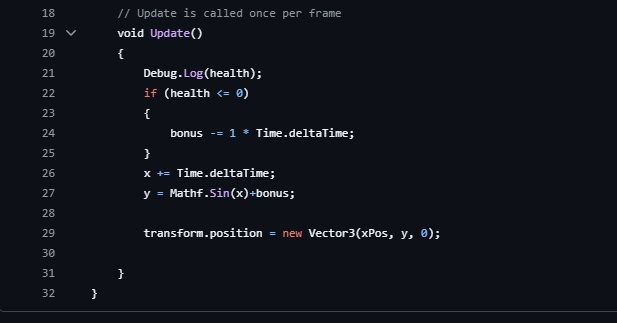
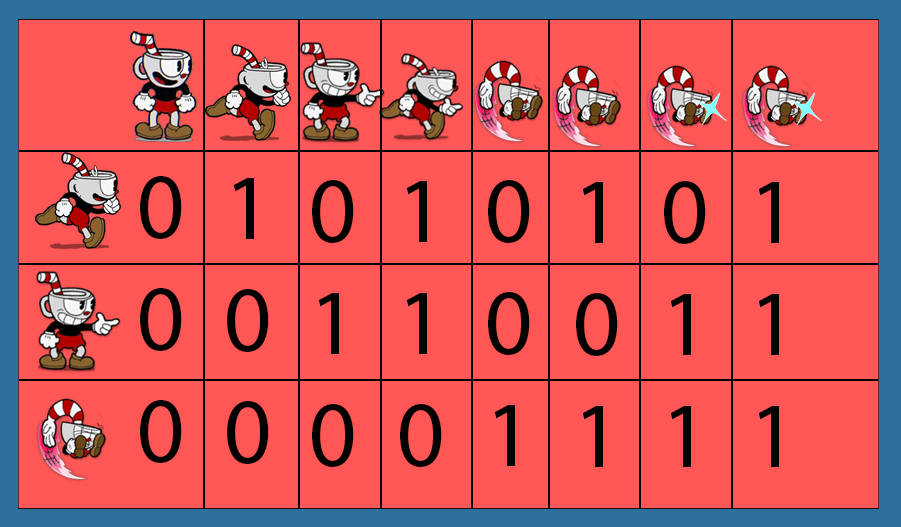

Cuphead vertical slice
Cuphead vertical slice was een opdracht waar wij als groep een 10 seconden clip van de 2017 hit indie game zo goed mogelijk na moesten maken. In het groepje van 3 waren mijn contributies hieraan de boss, de beweging van de platforms, en hoe het animatie systeem werkt.
De boss

Voor de bossfight heb ik de ai gemaakt voor de boss, uitgebeeld hier in de visual sheet. Hieronder zal ik het hebben over hoe de platforms zelf werken maar voor nu kan ik wat code laten zien.
waarin te zien is dat ik de hoogte van de boss heb gedaan met een simpele sinusgolf, waardoor hij vlot maar rustig omhoog en omlaag blijft gaan. Het Bonus deel hieraan zorgt ervoor dat als de boss geen health meer heeft, hij zal zakken, waar hij zal verdwijnen en de speler wint.
De platforms

De platforms werken simpel, aan het begin nemen ze allemaal hun huidige y-positie op, daarna bewegen ze constant langzaam omhoog en omlaag, ook met een sinusgolf, wanneer ze geraakt worden door een vuurbal vallen ze totdat ze net offscreen zijn. Op dat punt begint er een timer op te tellen, wanneer deze timer 4 seconden aantikt komt het platform weer omhoog totdat hun y-positie hetzelfde is als de y-positie die ze aan het begin opnamen, en gaan ze weer in een staat waar de speler op ze kan staan, en ze weer geraakt kunnen worden door de boss.
De animatie
De animatie van cuphead gaf ons team wat problemen totdat ik met mijn oplossing kwam. Het probleem was dat cuphead een animatie heeft voor lopen, een animatie voor schieten, een animatie voor springen, en een animatie voor stil staan, alleen cuphead moet ook kunnen springen en schieten, of lopen en schieten, en die animaties overlapte vaak, de game kreeg tegelijkertijd te horen: "loop", "loop en schiet" en "schiet". Mijn oplossing die ik hierop gaf is dat we een binair systeem implementeren, de int die de animatie bestuurd begint op 0, wanneer cuphead stli staat, niet springt, en niet schiet. Die 3 acties zijn allemaal een bit in dit systeem. springen is 4, schieten is 2, lopen is 1. wanneer je begint te lopen wordt 1 toegevoegd aan de animatie int, zelfde met 2 op schieten en 4 op springen. dus stel cuphead springt en loopt, dan wordt 4 voor springen en 1 voor lopen toegevoegd aan de int. Vervolgens leest de animator dat de animatie int 5 is, en speelt het dus de animatie af voor lopen en springen. Als dit nogsteeds onduidelijk is heb ik hieronder een visual sheet gemaakt om het verder uit te leggen. 